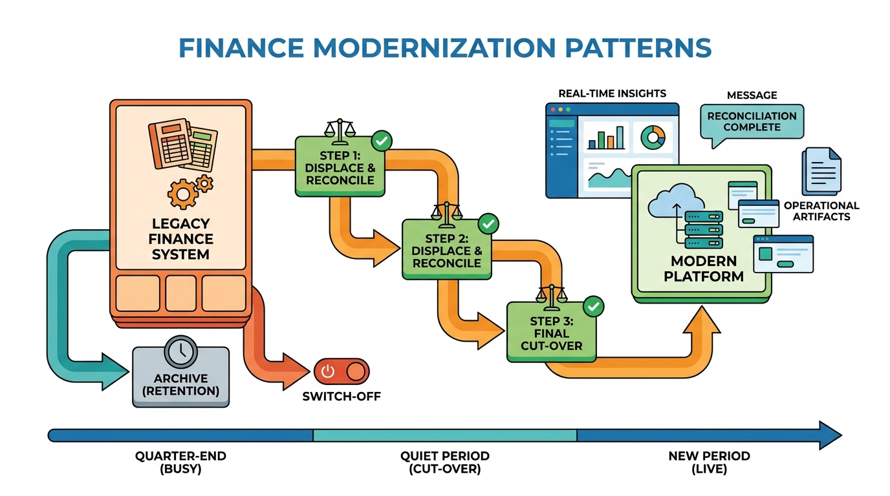

Part I — FOUNDATIONS: The Enterprise and Its Finance Domain
Modernization Patterns for Legacy Finance Systems

Image generated by Google Gemini (gemini-3-pro-image-preview)
Part I — FOUNDATIONS: The Enterprise and Its Finance Domain

Image generated by Google Gemini (gemini-3-pro-image-preview)